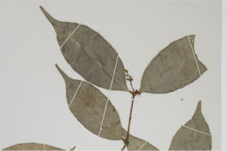
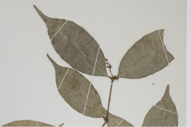

Trees up to 10 m tall.
10 ಮೀ. ಎತ್ತರದವರೆಗಿನ ಮರಗಳು.
Trees up to 10 m tall.
மரங்கள் 10 மீ. உயரம் வரை வளரக்கூடியது.
Branchlets terete, glabrous.
ಕಿರುಕೊಂಬೆಗಳು ದುಂಡಾಗಿದ್ದು ರೋಮರಹಿತವಾಗಿರುತ್ತವೆ.
Branchlets terete, glabrous.
சிறியநுனிக்கிளைகள் குறுக்குவெட்டுத் தோற்றத்தில் வளையமானது, உரோமங்களற்றது.
Leaves simple, opposite, decussate; petiole ca. 0.3 cm long, canaliculate, glabrous; lamina 6-11.6 x 3.2-4 cm, elliptic, elliptic-oblong, apex caudate, base acute to attenuate, margin entire, glabrous, coriaceous, drying olive green; midrib slightly canaliculate; secondary_nerves ca. 6 pairs, slender, looped; tertiary_nerves broadly reticulate to obscure.
ಎಲೆಗಳು ಸರಳವಾಗಿದ್ದು ಕತ್ತರಿಯಾಕಾರದ ಅಭಿಮುಖ ಜೋಡನಾ ವ್ಯವಸ್ಥೆಯಲ್ಲಿರುತ್ತವೆ ; ಎಲೆತೊಟ್ಟುಗಳು ಅಂದಾಜು 0.3 ಸೆಂ.ಮೀ.ಉದ್ದವಿದ್ದು ,ಕಾಲುವೆ ಗೆರೆಯನ್ನು ಹೊಂದಿರುತ್ತವೆ ಮತ್ತು ರೋಮರಹಿತವಾಗಿರುತ್ತದೆ; ಪತ್ರಗಳು 6-11.6X 3.2-4 ಸೆಂ.ಮೀ. ಗಾತ್ರ, ಅಂಡವೃತ್ತ, ಅಂಡವೃತ್ತ-ಚತುರಸ್ರದವರೆಗಿನ ಆಕಾರ, ಬಾಲರೂಪಿ ತುದಿ,ಚೂಪಾದ ಅಥವಾ ಒಳಬಾಗಿದ ಬುಡ, ನಯವಾದ ಅಂಚು, ರೋಮರಹಿತವಾದ ಮತ್ತು ತೊಗಲನ್ನೋಲುವ ಮೇಲ್ಮೈ ಹೊಂದಿರುತ್ತವೆ ಮತ್ತು ಒಣಗಿದಾಗ ಮಬ್ಬು ಹಳದಿ ಛಾಯೆಯುಳ್ಳ ಹಸಿರು ಬಣ್ಣದಲ್ಲಿರುತ್ತವೆ; ಮಧ್ಯನಾಳ ಸ್ವಲ್ಪಮಟ್ಟಿಗೆ ಕಾಲುವೆಗೆರೆ ಸಮೇತವಿರುತ್ತದೆ;ಎರಡನೇ ದರ್ಜೆಯ ನಾಳಗಳು ಅಂದಾಜು 6 ಜೋಡಿಗಳಿದ್ದು ತೆಳುವಾಗಿರುತ್ತವೆ ಮತ್ತು ಕುಣಿಕೆಗೊಂಡಿರುತ್ತವೆ;ಮೂರನೇ ದರ್ಜೆಯ ನಾಳಗಳು ವಿಶಾಲ ಜಾಲಬಂಧ ನಾಳ ವಿನ್ಯಾಸದಲ್ಲಿರುವುದರಿಂದ ಹಿಡಿದು ಅಸ್ಪಷ್ಟವಾಗಿರುವರೆಗಿನ ಮಾದರಿಯಲ್ಲಿರುತ್ತವೆ.
Leaves simple, opposite, decussate; petiole ca. 0.3 cm long, canaliculate, glabrous; lamina 6-11.6 x 3.2-4 cm, elliptic, elliptic-oblong, apex caudate, base acute to attenuate, margin entire, glabrous, coriaceous, drying olive green; midrib slightly canaliculate; secondary_nerves ca. 6 pairs, slender, looped; tertiary_nerves broadly reticulate to obscure.
இலைகள் தனித்தவை, எதிரடுக்கமானவை, குறுக்குமறுக்கானவை; இலைக்காம்பு 0.3 செ.மீ. நீளமானது, குறுக்குவெட்டுத் தோற்றத்தில் கேனாலிகுலேட், உரோமங்களற்றது; இலை அலகு 6-11.6 x 3.2-4 செ.மீ., நீள்வட்ட வடிவானது, நீள்வட்ட-நீள்சதுர வடிவானது, அலகின் நுனி வால் போன்றது, அலகின் தளம் கூரியது முதல் அட்டனுவேட், அலகின் விளிம்பு முழுமையானது, உரோமங்களற்றது, கோரியேசியஸ், உலரும் போது ஆலிவ் பச்சை நிறமானது; மையநரம்பு மேற்புறத்தில் அலகின் பரப்பைவிட சிறிது பள்ளமானது; இரண்டாம் நிலை நரம்புகள் 6 ஜோடிகள், மெல்லியது, ஒன்றொடுன்று விளிம்பின் அருகில் (லுப்) இணைந்தவை; மூன்றாம் நிலை நரம்புகள் அகன்ற வலைப்பின்னல் போன்றவை முதல் கண்களுக்கு புலப்படாது.
Inflorescence axillary panicles, up to 4 cm long; flowers white.
ಪುಷ್ಪಮಂಜರಿಗಳು ಅಕ್ಷಾಕಂಕುಳಿನಲ್ಲಿನ ಮಧ್ಯಾಭಿಸರ ಮಾದರಿಯಲ್ಲಿದ್ದು 4 ಸೆಂ.ಮೀ. ವರೆಗಿನ ಉದ್ದ ಹೊಂದಿರುತ್ತವೆ.ಹೂಗಳ ಬಣ್ಣ ಬಿಳಿ.
Inflorescence axillary panicles, up to 4 cm long; flowers white.
மஞ்சரி தண்டின் இலைக்கோணங்களில் காணப்படும் பேனிக்கிள், 4 செ.மீ. நீளமானது; மலர்கள் வெள்ளை நிறமானது.
Drupe, 1.3 cm long, ovoid, smooth; seed one.
ಡ್ರೂಪ್ಗಳು 1.3 ಸೆಂ.ಮೀ. ಉದ್ದವಿದ್ದು ಅಂಡಾಕಾರದಲ್ಲಿದ್ದು ನಯವಾಗಿರುತ್ತವೆ; ಬೀಜ ಒಂದು.
Drupe, 1.3 cm long, ovoid, smooth; seed one.
உள்ளோட்டுத்தசைகனி (ட்ரூப்), 1.3 செ.மீ. நீளமானது, முட்டை வடிவானது, வழவழப்பானது; ஒரு விதையுள்ள கனி.


 
